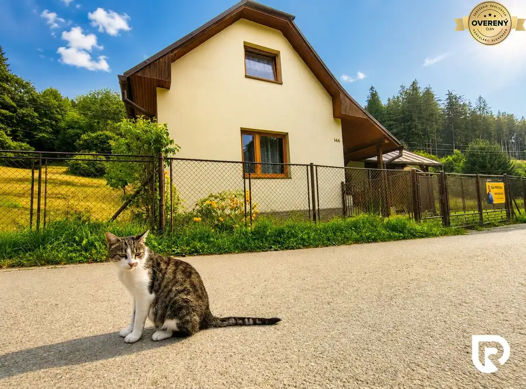
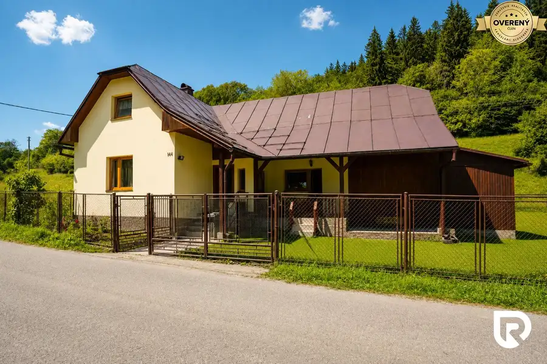
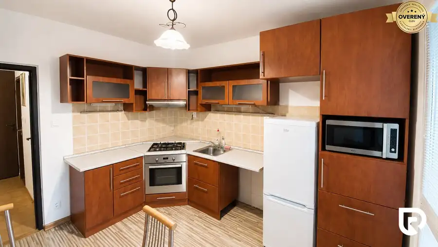

3-izbový byt 90 m² v rodinnom dome | považský chlmec - Žilina
Žilina
- Dispozícia3-izbový
- Plocha90 m²
- Poschodie0. z 1
- Stavpôvodný
- Vlastníctvoosobné
O nehnuteľnosti
RADO Reality ponúka na prenájom priestranný 3-izbový byt s výmerou približne 90 m², ktorý sa nachádza na prízemí rodinného domu v Považskom Chlmci.
Voľný od 1.10.2026
Byt je vhodný pre záujemcov, ktorí hľadajú veľký obytný priestor za dostupnú cenu a nevyžadujú moderné či luxusné bývanie.
DISPOZÍCIA
Prenajímaná časť domu pozostáva z:
2 väčších izieb
1 menšej izby
kuchyne
kúpeľne
príslušenstva
Byt sa prenajíma zariadený.
Zariadenie aj samotný dom sú staršie, avšak zachovalé a plne funkčné.
ĎALŠIE INFORMÁCIE
výmera: cca 90 m²
počet izieb: 3
poschodie: prízemie rodinného domu
zariadenie: áno
voľný od 1.10.2026
preferovaný dlhodobý prenájom
PLATBY
nájomné: 500€ / mesiac
- do nájomného je už započítaný aj internet
energie:
podľa skutočnej spotreby
1 osoba orientačne cca 130€ / mesiac
2 osoby cca 150€ / mesiac
3 osoby cca 170€ / mesiac
1x depozit
vo výške 1300€, ktorý sa vracia na konci nájmu - pokiaľ neboli spôsobené škody na byte (depozit neslúži ako nájomné)
1x rezervácia
Uvedená cena je konečná, pokiaľ sa zmluvné strany nedohodnú inak. V cene sú zahrnuté realitné a právne služby spojené s prenájmom nehnuteľnosti.
Na poschodí rodinného domu býva rodina s dvomi malými deťmi. Prenajímané prízemie je určené na dlhodobé a pokojné bývanie.
Po dohode je možné využiť aj pivničné priestory s výmerou približne 90 m² na uskladnenie vecí.
PRE KOHO JE BYT VHODNÝ?
Byt odporúčame najmä záujemcom, ktorí ocenia veľkú výmeru, viac izieb a nízke mesačné náklady a zároveň im neprekáža staršie vybavenie a charakter bývania v rodinnom dome.
V prípade záujmu o detailnejšie informácie alebo obhliadku pozemku ma neváhajte kontaktovať:
Mgr. Marián Mendel
RADO Reality Group
Tel.:
E-mail:
RADO Reality Group patrí medzi najúspešnejšie realitné kancelárie na Slovensku a je držiteľom viacerých prestížnych ocenení v oblasti realitných služieb.
Parametre
| Zastavaná plocha | 96 m² |
|---|---|
| Úžitková plocha | 90 m² |
| Poschodie | prízemie |
| Počet poschodí | 1 |
| Počet izieb | 3 |
| Vlastníctvo | osobné |
| Stav | pôvodný |
| Voda | verejný vodovod |
| El. napätie | 230/400V |
| Plyn | nie |
| Kanalizácia | áno |
| Kúpeľňa | áno |
| Vykurovanie | spoločné |
| Pivnica | áno |
| Postavené z | Zmiešané |
| Energetický certifikát | nie |
| Okná | iné |
| Terén | rovina |
| Prístupová cesta | asfaltová cesta |
| Dátum zverejnenia | 30. 8. 2026 |
Kde to je
Mohlo by Vás zaujímať

Rodinné domy10 214 900 €Investičná Príležitosť Dom pri SKI MAKOV 4 959 m² pozemok Makov 3-izbový140 m² RADO Reality Vám ponúka na predaj tento krásny domček v obci Makov, ktorá zaujme najmä svojou polohou, veľkosťou pozemku: 4 959 m², možnosťou…
Chaty a chalupy10 214 900 €Unikátna Chata - RD pri SKI MAKOV + 4 959 m² Pozemok | Makov Makov 3-izbový140 m² RADO Reality Vám ponúka na predaj tento krásny domček v obci Makov, ktorá zaujme najmä svojou polohou, veľkosťou pozemku: 4 959 m², možnosťou…
Byt10 Cena dohodouNa prenájom priestranný 2-izbový byt s loggiou | Žilina – Hájik Žilina 2-izbový53 m²2. podlažie RADOReality Vám ponúka na prenájom príjemný a udržiavaný 2-izbový byt nachádzajúci sa vo vyhľadávanej lokalite Žilina – Hájik, na ulici Mateja Bela.…